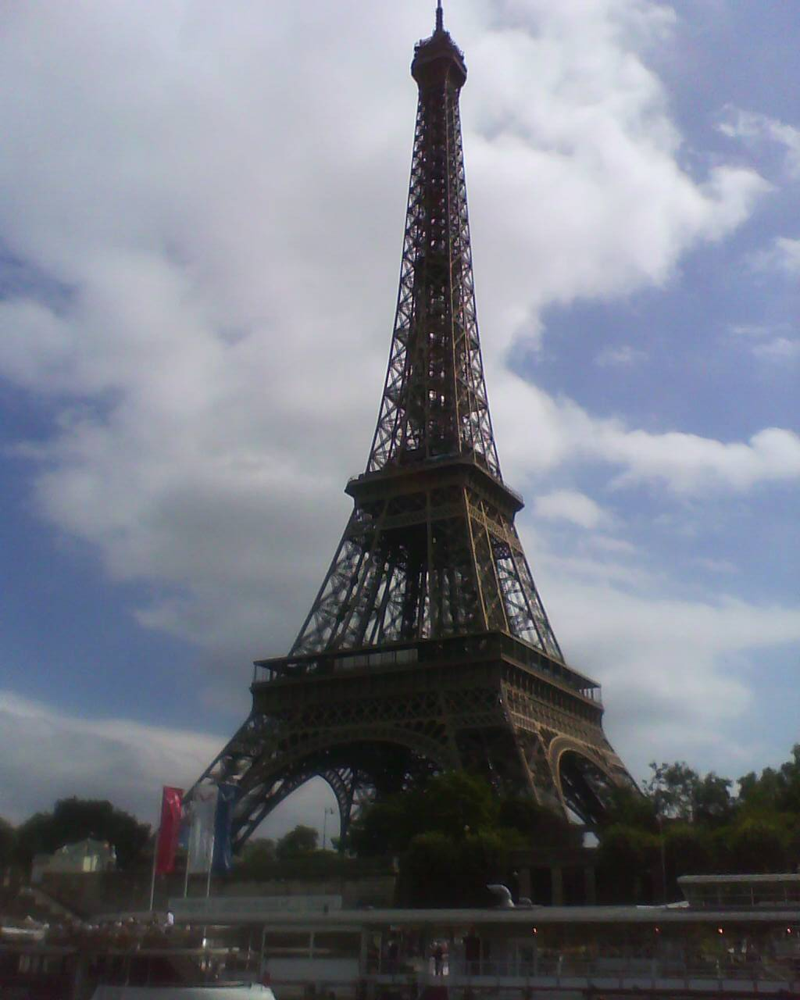

Scholarships to Study in Europe for International Students
Last updated: October 2026. Deadlines change every year. Verify every date on the official programme site before applying.

Europe is the strongest continent for fully funded study, because four major programmes overlap there: one EU-wide, one German, one British and one Turkish. They differ in what they fund, how you apply, and when they close — and the biggest mistake is treating them as interchangeable. This page maps each one so you can pick the right route first.
Erasmus Mundus Joint Masters — the multi-country degree
Erasmus Mundus funds two-year joint master's degrees delivered by consortia of universities in two or three countries. You choose a programme from the official catalogue, apply to that consortium, and study in more than one country. The scholarship covers participation costs, travel and a living allowance. Deadlines are set by each consortium and most fall between October and January for the following autumn, so the practical window for 2027 entry runs from October 2026 to January 2027. There is no general work-experience requirement and no general age limit, though individual programmes may prefer experience. Full guide: Erasmus Mundus Joint Masters. Official catalogue: erasmus-plus.ec.europa.eu.
DAAD — Germany's funded master's, PhD and research routes
DAAD, the German Academic Exchange Service, funds a wide range of study and research in Germany. The best-known routes for international applicants are the EPOS development-related master's programmes and the Helmut-Schmidt programme in public policy and governance. EPOS applicants generally need a degree no more than six years old and at least two years of relevant professional experience after the bachelor's, and they apply to the courses directly — up to three from the EPOS list — rather than to DAAD. Most 2027/28 course deadlines fall between August and November 2026. English-taught programmes need IELTS or TOEFL, or a medium-of-instruction certificate at many programmes; German-taught programmes need German at B1 or above. Full guide: DAAD Germany. Official site: daad.de.
Chevening — the UK's leadership master's
Chevening funds one-year master's degrees at UK universities for applicants with at least 2,800 hours of work experience after their degree. The cycle opens around August and closes in early October each year; the 2027 cycle opened 4 August 2026 and closed 6 October 2026. Note that the UK is no longer an Erasmus+ programme country, so Chevening — not Erasmus Mundus — is the UK's flagship route. Full guide: Chevening. Official site: chevening.org.
Türkiye Bursları — Türkiye's all-level scholarship
Türkiye sits across Europe and Asia, and its national scholarship funds bachelor's, master's and PhD study at Turkish universities. The annual window has run from 10 January to 20 February, with age limits under 21, 30 and 35 by level and marks thresholds of 70%, 75% and 90% depending on level and field. It is the only programme on this page that funds bachelor's degrees at scale. Full guide: Türkiye Bursları. Official site: turkiyeburslari.gov.tr.
How to plan a European application year
Work backwards from the autumn cluster: Chevening and most Erasmus Mundus deadlines fall in autumn, DAAD course deadlines mostly in late summer to late autumn, and Türkiye opens in January. That means a realistic year looks like this: prepare documents and English evidence over the summer, submit Chevening and Erasmus Mundus applications in the autumn, apply to DAAD courses as their windows open, and file Türkiye in January–February. Keep a single calendar with every deadline's cycle year, and re-check each date on the official site in the month you apply — European programme pages update annually, and last year's dates are the fastest way to miss this year's window.